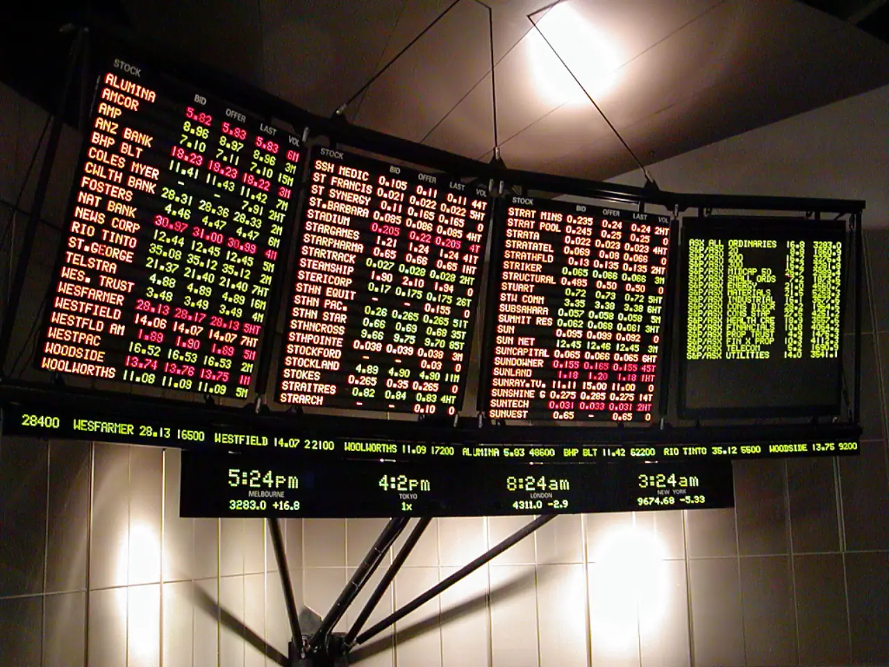

실적 발표에서 매출이 늘었다는 문장은 가장 먼저 보이지만, 투자 판단에는 부족합니다. 좋은 매출은 이익률을 동반해야 하고, 좋은 이익은 현금으로 남아야 합니다. 영업이익률과 자유현금흐름을 같이 보면 좋은 실적과 비싼 실적을 나눌 수 있습니다.
회사는 여러 방식으로 이익을 보여 줄 수 있습니다. 가격 인상, 비용 절감, 재고평가, 일회성 처분이익, 세금 효과가 모두 순이익을 바꿉니다. 하지만 자유현금흐름은 실제로 남은 돈에 가깝습니다. 투자자는 손익계산서와 현금흐름표를 함께 봐야 합니다.
기업 분석의 목적은 숫자를 많이 외우는 것이 아닙니다. 매출이 어느 비용을 지나 영업이익이 되고, 다시 어느 투자와 운전자본을 지나 현금으로 남는지 추적하는 것입니다.
매출은 출발점입니다

매출 성장은 시장 점유율과 가격 결정력을 보여 줄 수 있습니다.
하지만 할인 판매와 저마진 물량으로 만든 매출은 주주가치에 덜 도움이 됩니다.
매출 증가와 매출총이익률을 함께 봐야 성장의 질이 보입니다.
이 대목에서는 숫자 하나를 따로 떼어 보지 않는 편이 좋습니다. 매출 성장은 시장 점유율과 가격 결정력을 보여 줄 수 있습니다. 하지만 할인 판매와 저마진 물량으로 만든 매출은 주주가치에 덜 도움이 됩니다. 매출 증가와 매출총이익률을 함께 봐야 성장의 질이 보입니다. 이 흐름이 다음 분기에도 이어지는지 확인하면 뉴스의 크기와 실제 투자 가치 사이의 간격을 줄일 수 있습니다.
영업이익률은 체질입니다
영업이익률이 오르면 같은 매출에서도 더 많은 이익이 남습니다.
고정비 레버리지가 작동하는 기업은 매출 회복기에 이익이 빠르게 늘 수 있습니다.
반대로 인건비와 물류비가 구조적으로 오르면 매출 성장에도 마진은 낮아집니다.
이 대목에서는 숫자 하나를 따로 떼어 보지 않는 편이 좋습니다. 영업이익률이 오르면 같은 매출에서도 더 많은 이익이 남습니다. 고정비 레버리지가 작동하는 기업은 매출 회복기에 이익이 빠르게 늘 수 있습니다. 반대로 인건비와 물류비가 구조적으로 오르면 매출 성장에도 마진은 낮아집니다. 이 흐름이 다음 분기에도 이어지는지 확인하면 뉴스의 크기와 실제 투자 가치 사이의 간격을 줄일 수 있습니다.
현금흐름은 거짓말이 적습니다
순이익이 좋아도 재고와 매출채권이 늘면 현금은 부족할 수 있습니다.
자유현금흐름은 영업현금흐름에서 설비투자를 뺀 뒤 남는 돈입니다.
배당과 자사주는 결국 자유현금흐름에서 나와야 오래 갑니다.
현금흐름은 거짓말이 적습니다을 볼 때는 숫자 하나를 따로 떼어 보지 않는 편이 좋습니다. 순이익이 좋아도 재고와 매출채권이 늘면 현금은 부족할 수 있습니다. 자유현금흐름은 영업현금흐름에서 설비투자를 뺀 뒤 남는 돈입니다. 배당과 자사주는 결국 자유현금흐름에서 나와야 오래 갑니다. 이 흐름이 다음 분기에도 이어지는지 확인하면 뉴스의 크기와 실제 투자 가치 사이의 간격을 줄일 수 있습니다.
일회성 이익을 걷어냅니다
자산 매각과 평가이익은 실적을 크게 보이게 만들 수 있습니다.
반복 가능한 영업이익과 일회성 손익을 나누면 기업의 실제 체력이 보입니다.
조정 이익을 볼 때는 회사가 제외한 비용이 정말 일회성인지 따져야 합니다.
일회성 이익을 걷어냅니다을 볼 때는 숫자 하나를 따로 떼어 보지 않는 편이 좋습니다. 자산 매각과 평가이익은 실적을 크게 보이게 만들 수 있습니다. 반복 가능한 영업이익과 일회성 손익을 나누면 기업의 실제 체력이 보입니다. 조정 이익을 볼 때는 회사가 제외한 비용이 정말 일회성인지 따져야 합니다. 이 흐름이 다음 분기에도 이어지는지 확인하면 뉴스의 크기와 실제 투자 가치 사이의 간격을 줄일 수 있습니다.
비싼 실적은 기대를 먹습니다
좋은 실적이어도 이미 주가에 반영돼 있으면 반응은 제한될 수 있습니다.
이익률 개선이 다음 분기에도 이어지는지 가이던스와 재고를 함께 확인해야 합니다.
실적 발표 후 주가가 흔들리는 이유는 숫자보다 앞으로의 기대가 바뀌기 때문입니다.
비싼 실적은 기대를 먹습니다을 볼 때는 숫자 하나를 따로 떼어 보지 않는 편이 좋습니다. 좋은 실적이어도 이미 주가에 반영돼 있으면 반응은 제한될 수 있습니다. 이익률 개선이 다음 분기에도 이어지는지 가이던스와 재고를 함께 확인해야 합니다. 실적 발표 후 주가가 흔들리는 이유는 숫자보다 앞으로의 기대가 바뀌기 때문입니다. 이 흐름이 다음 분기에도 이어지는지 확인하면 뉴스의 크기와 실제 투자 가치 사이의 간격을 줄일 수 있습니다.
좋은 실적은 매출, 이익률, 현금흐름이 같은 방향으로 움직일 때 만들어집니다. 매출만 늘고 현금이 남지 않으면 성장은 비싸고, 순이익만 늘고 영업이익률이 약하면 일회성일 수 있습니다.
실적표를 읽을 때는 매출 성장률, 매출총이익률, 영업이익률, 영업현금흐름, 자유현금흐름을 순서대로 확인해 보세요. 이 다섯 줄이 투자자의 시간을 가장 많이 아껴 줍니다.
기업 분석은 숫자의 크기를 보는 일이 아니라 숫자의 이동 경로를 보는 일입니다. 매출이 이익으로, 이익이 현금으로, 현금이 주주환원이나 재투자로 이어지는지 확인하면 실적의 질을 더 정확히 판단할 수 있습니다.
실적 발표 직후에는 주가가 먼저 움직이고 해석이 뒤따르는 경우가 많습니다. 컨센서스 차이, 가이던스, 재고, 매출채권, 비용 구조를 같은 표에 놓고 보면 과도한 반응과 진짜 변화를 구분하기 쉽습니다.
마지막으로 빅데이터 글을 읽을 때는 가격이 먼저 움직인 뒤 이유가 붙는 경우가 많다는 점을 기억해야 합니다. 투자자는 결론을 서둘러 정하기보다 공식 자료, 최근 실적, 현금흐름, 밸류에이션, 시장 기대가 서로 같은 방향인지 차분히 확인하는 편이 좋습니다.
기업 분석은 숫자의 크기를 보는 일이 아니라 숫자의 이동 경로를 보는 일입니다. 매출이 이익으로, 이익이 현금으로, 현금이 주주환원이나 재투자로 이어지는지 확인하면 실적의 질을 더 정확히 판단할 수 있습니다.
실적 발표 직후에는 주가가 먼저 움직이고 해석이 뒤따르는 경우가 많습니다. 컨센서스 차이, 가이던스, 재고, 매출채권, 비용 구조를 같은 표에 놓고 보면 과도한 반응과 진짜 변화를 구분하기 쉽습니다.
마지막으로 투자 글을 읽을 때는 가격이 먼저 움직인 뒤 이유가 붙는 경우가 많다는 점을 기억해야 합니다. 투자자는 결론을 서둘러 정하기보다 공식 자료, 최근 실적, 현금흐름, 밸류에이션, 시장 기대가 서로 같은 방향인지 차분히 확인하는 편이 좋습니다.
이 글의 목적은 정답을 대신 내려 주는 것이 아니라 확인 순서를 줄이는 데 있습니다. 관심 종목이나 상품이 있다면 같은 기준을 표로 옮겨 적고, 다음 실적 발표 때 실제 숫자가 어떻게 변했는지 다시 비교해 보는 방식이 가장 안전합니다.
영업익률과 자유현금흐름 좋 실적과 비싼 실적을 릅니다을 다시 점검할 때는 한 번의 뉴스보다 여러 분기의 방향이 중요합니다. 숫자가 좋아지는 이유가 가격인지 물량인지, 비용 절감인지 일회성인지 나누어 보면 기대와 현실의 차이를 더 빨리 알아차릴 수 있습니다.
빅데이터에서는 숫자가 좋아진 이유를 반드시 나눠야 합니다. 가격 인상인지, 물량 증가인지, 환율인지, 비용 절감인지, 일회성 이익인지에 따라 다음 분기 지속 가능성이 달라집니다. 같은 영업이익 증가라도 질은 완전히 다를 수 있습니다.
현금흐름표는 손익계산서의 빈틈을 메워 줍니다. 순이익이 늘었는데 영업현금흐름이 약하면 재고나 매출채권, 선급비용을 확인해야 합니다. 좋은 실적은 장부 이익뿐 아니라 현금으로도 남아야 합니다.
가이던스와 컨퍼런스콜은 숫자의 방향을 설명합니다. 경영진이 수요를 어떻게 표현하는지, 비용 압박을 어떻게 말하는지, 고객 주문과 재고를 어떤 단어로 설명하는지 기록하면 다음 실적의 단서를 더 빨리 잡을 수 있습니다.
또 하나 중요한 점은 기록입니다. 관심 있는 종목이나 상품을 볼 때 오늘의 판단 근거를 짧게 남겨 두면 다음 실적 발표나 시장 변화가 왔을 때 생각이 어떻게 달라졌는지 확인할 수 있습니다. 이 기록은 매수와 매도보다 먼저 투자 습관을 안정시키며, 같은 실수를 반복하지 않게 도와줍니다.
작은 차이를 확인하는 습관이 쌓이면 같은 뉴스에서도 더 침착하게 판단할 수 있습니다.
관련 영상
재무제표에서 영업이익과 현금흐름을 읽는 방법